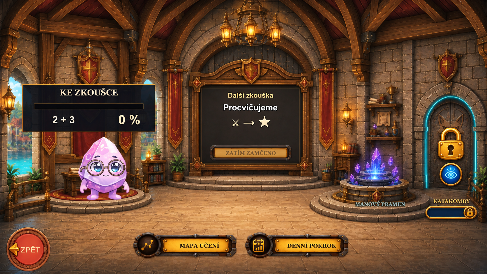
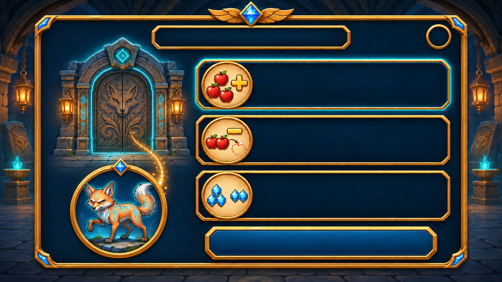

Katakomby

Fiktivní profily · skutečná současná pravidla výzvy a lišky · žádné ukládání do hry.
Nové vyšší stupně a odměna za udržení rychlosti jsou zatím návrh pravidel. Hlas je pracovní ukázka Zuzana.

